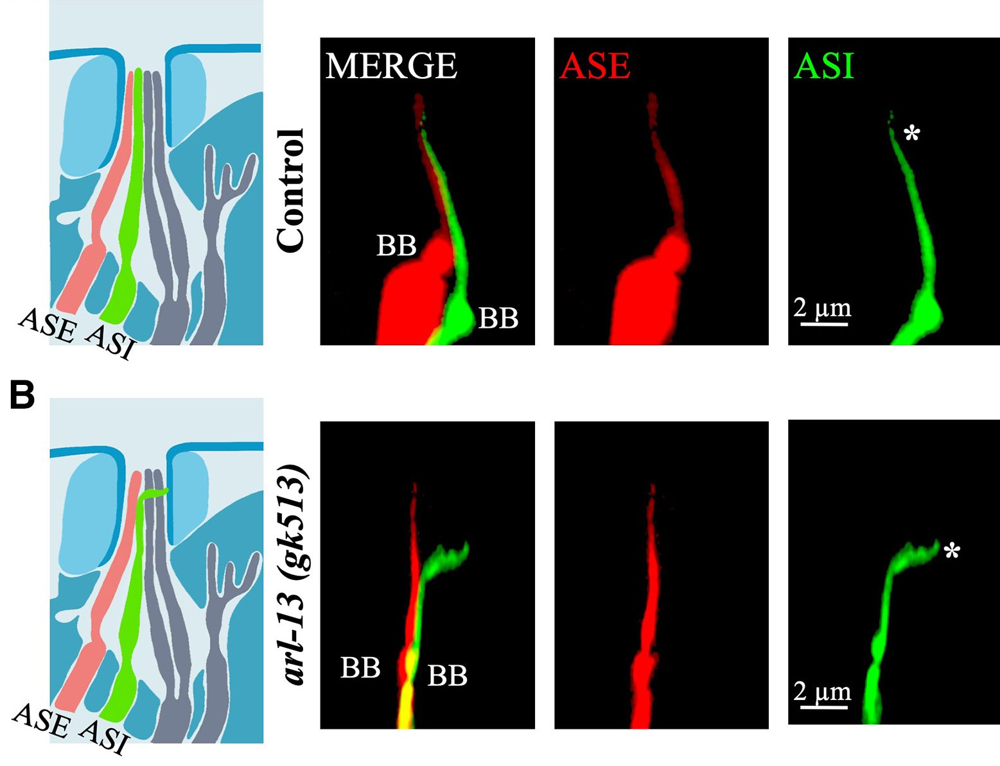

Cilia are microtubule-based structures essential for cellular function...
Research Interests
Our laboratory is dedicated to the understanding of the genetic and molecular mechanisms of rare diseases, with particular focus on ciliopathies. Through interdisciplinary collaboration with clinical scientists, we bridge the genotype-phenotype gap, using comparative genomics and functional analysis to uncover disease mechanisms and therapeutic targets.

I. Investigating the Functional Implications of Orthologous Variants in Rare Diseases using ConVarT and CRISPR/Cas9
We developed ConVarT (Congruent clinical Variation Visualization Tool) to automatically identify MatchVars—orthologous gene equivalent amino acid changes in other species, including humans, C. elegans, and mice. Using large collections of phenotypic data from model organisms, we can predict the pathogenicity of human variants of uncertain significance (VUS), which are common in rare disorders. To test these predictions experimentally, we apply CRISPR/Cas9 gene editing to introduce single MatchVars into model organisms for functional studies and the discovery of new disease-causing mechanisms.
Methods: Comparative Genomics, Orthologous Variant Analysis (ConVarT), CRISPR/Cas9 Gene Editing, Functional Assays (protein interaction analyses, cell-based assays), Clinical Data Integration, Patient-Derived Cell Studies

II. Understanding Cilia-Cilia Joining and Inter-Ciliary Communication in Rare Diseases
Recent discoveries highlight dynamic cilia-cilia interactions like cilia-cilia joining. We are fascinated by dissecting the molecular machinery regulating cilia-cilia joining and cilia-cilia joining's role in cellular signal transduction and tissue homeostasis. Identifying key proteins and pathways required for cilia-cilia joining, we anticipate to discover how cilia-cilia joining controls coordinated ciliary function and what occurs when they are compromised.
Methods: Advanced Light Microscopy (Confocal, Super-Resolution), Live-Cell Imaging, Proteomics, Genetic Knockdown/Knockout

III. Disentangling the Molecular Pathways Regulating Ciliogenesis and Rare Disease Genes
Ciliogenesis and other rare disease pathways are intricate regulatory circuits that coordinate gene expression and protein assembly. The laboratory investigates molecular pathways and regulating factors that oversee these processes. Through transcriptomics, proteomics, and functional genomics, we aim to define key signaling pathways that modulate cellular function and disease pathology.
Methods: CRISPR/Cas9 Gene Editing, Functional Assays, Immunofluorescence, Patient Sample Analysis, High-resolution Light Microscopy (Confocal, Super-Resolution), Live-Cell Imaging